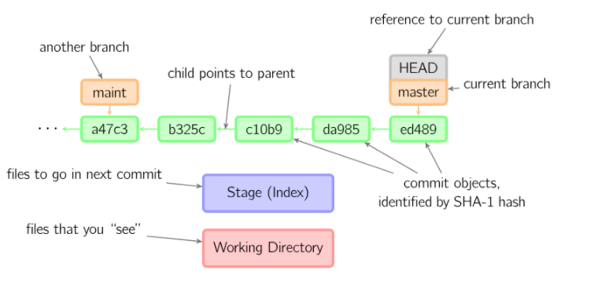

这是一个神奇的命令,搭配不同的参数会进行不同程度的回退,这个命令平时不常用,平时也不敢用,因为用错了就容易丢失修改记录,所以下面还要讲讲git的树模型

上面的图是一个git版本控制的流程。图中有几个要素,Working Directory(工作区 在git中好像也叫做working tree),主要是用于我们编辑用的。编辑完毕后,使用git add将变动加入到Stage(暂存区 在git中好像也叫做index)中,暂存区主要是存储即将被提交的更改,在提交前你可以一直向其中继续add。
在git commit之后,暂存区就成为了一个commit objects(提交对象)也就是图中紫色的框变成了一个绿色的框,可以看到每个提交对象都有一个唯一的哈希值。曾经的提交对象到当前的提交对象像链表一样连接在一起。再往上看就是分支名指针,分支名指针可以指向不同的提交对象展示文件不同时期的状态。HEAD是当前分支引用的指针,它总是指向该分支上的最后一次提交。
当HEAD指向提交对象、暂存区和工作区中的所有内容相同时git status会没有输出。
这里需要明确的是,编辑文件是改变工作区的内容,git add是改变Stage(index), git commit是改变HEAD指针。
# 编辑 ----change---》 工作区
# git add ----change---》 暂存区
# git commit ----change---》 HEAD
了解上面git模型的一些基础知识后,才能够更好的使用reset命令,下面来进一步说明。
git reset有三种模式,--hard、--soft、--mixed,使用这三种模式不会丢失已经提交的记录(我以前总认为--hard模式回退到以前的提交记录会把新的提交记录都丢弃了,这是错误的),这三种模式只是在回退时对暂存区和工作区的影响不同。
会在重置HEAD的同时,重置暂存区和工作区的内容。
看参考博客上的内容来讲,其实--hard模式是将当前暂存区和工作区内容重置为命令中对应提交节点的暂存区和工作区相同的内容,只不过一般都是向同一分支过去的节点重置,过去提交节点的暂存区和工作区都是空的,这样看起来是重置了暂存区和工作区。
这个说法还没有被证实,目前来说就当是会重置暂存区和工作区的内容吧
保留工作目录,并且清空暂存区。也就是说,工作目录的修改、暂存区的内容以及由reset所导致的新的文件差异,都会被放进工作目录。简而言之,就是把所有差异都混合(mixed)放在工作目录中。
保留工作目录,并把重置HEAD所带来的新的差异放进暂存区。进一步解释,此模式下工作区内容会被保存,暂存区中已经存在的部分也会被保存,但是进行reset操作时,两次提交节点的是有差异的(比如第四次提交比第三次多了一个文件或者一行内容的增删),而这部分差异则会保存于暂存区。
1. 场景1 要放弃目前本地暂存区和工作区的所有更改,可以执行git reset -hard HEAD来强制恢复git管理的文件夹的內容及状态
2. 场景2 真的想抛弃目标节点后的所有提交记录
场景 假设我们想合并当前节点与reset目标节点之间不具太大意义的提交记录(可能是阶段性地频繁提交,就是开发一个功能的时候,改或者增加一个文件的时候就提交,这样做导致一个完整的功能可能会好多个提交记录,这时你需要把这些提交整合成一个提交的时候)时,可以考虑使用git reset --soft来让提交演进线图较为清晰。总而言之,可以使用--soft合并多个提交记录。
1. 场景1 使用完git reset --mixed后,我們可以直接执行git add将這些修改的文件內容加入暂存区中,再提交至仓库中,这样一样可以达到合并提交记录的效果(与上面--soft合并提交记录差不多,只是多了git add添加到暂存区的操作)
2. 场景2 移除所有暂存区中准备要提交的文件(Staged files),我们可以执行git reset HEAD来将已经进入到暂存区的文件放回到工作区中(有时候发现add错文件到暂存区,就可以使用命令)
3. 场景3 提交某些错误代码,或者没有必要的文件也被提交上去,不想再修改错误然后再为此生成一个提交记录,可以回退到正确的提交记录上,然后所有原节点和reset节点之间差异会返回工作目录,假如有个没必要的文件的话就可以直接删除了,再提交上去